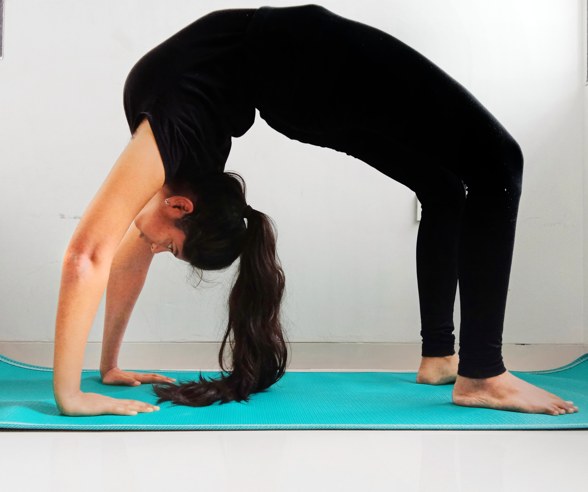
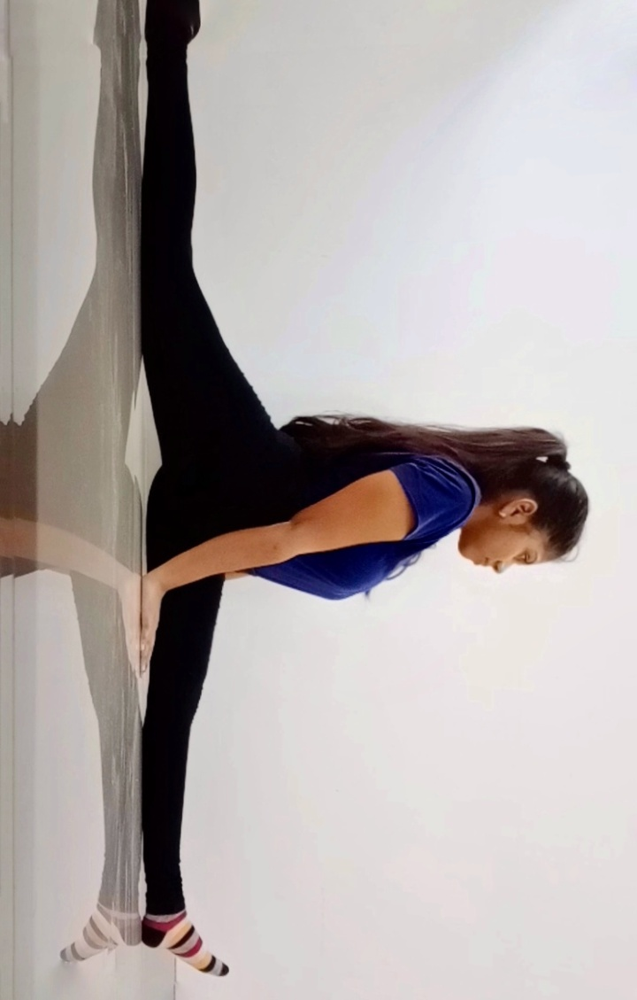
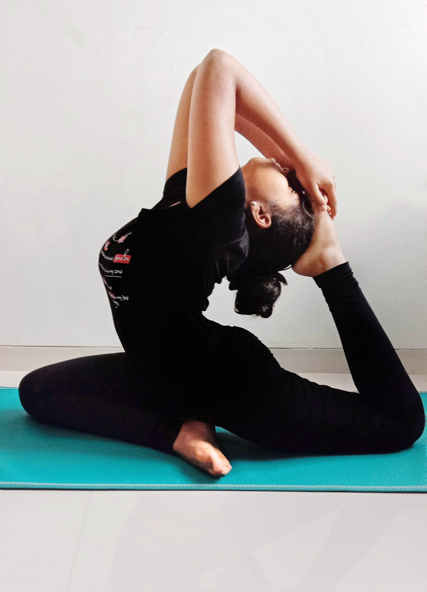

Wheel Pose (Chakrasana)
Wheel Pose is a backbend that is characterized as a beginner's backbend,
but it still requires building up strength and flexibility to achieve it.
It opens the chest, shoulders, and hips in a way that counteracts the typical
modern-day sitting posture.This pose improves spinal mobility and opens the
chest. It strengthens the arms, shoulders, and legs. Wheel Pose is
traditionally said to be energizing and can lift your mood.

Splits (Hanumanasana)
This asana stretches and strengthens the thigh muscles, groin region and
hamstrings.Stretches the back muscles and makes them strong. Releases stress,
tension and calm your mind. Stretches and balances the hip flexors. Prevents
lower back pain. Tones the waist muscles, brings flexibility to hips with
regular practice. Stimulates the abdominal and reproductive organs of your
body.

One-Legged King Pigeon Pose
(Eka Pada Rajakapotasana)
This pose stretches the hips, quads, groin, and shoulders. It is also a
backbend that opens the heart. In preparing for this pose, you will develop
great flexibility in your hips, shoulders, and back. You will also challenge
your balance. Practicing this pose will help you build even greater
flexibility, which will help you throughout your daily life.